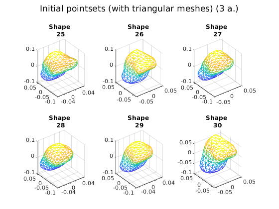
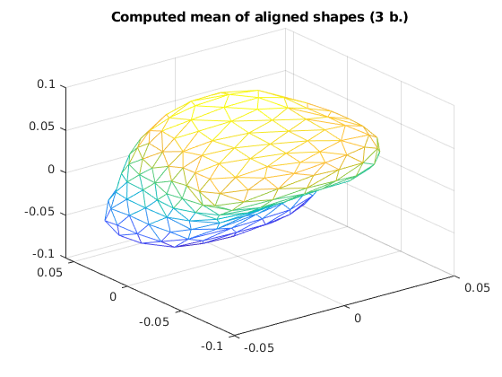
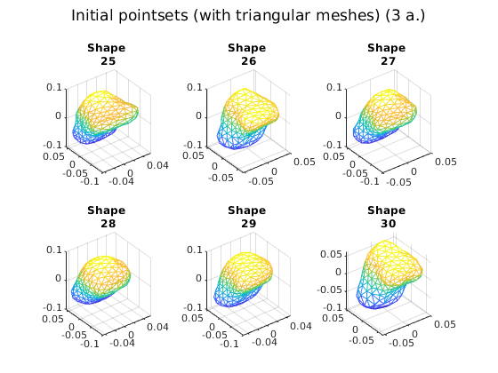
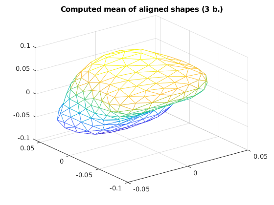
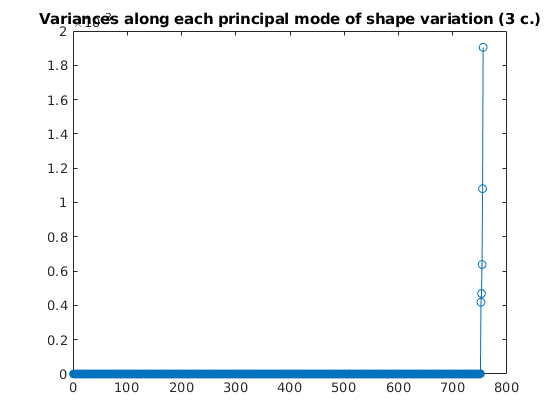
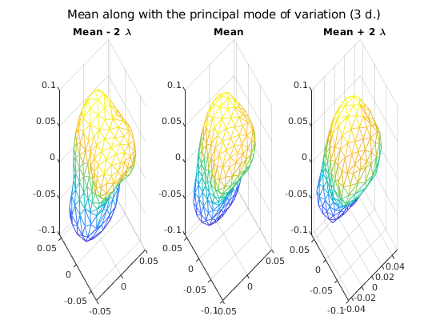

Assignment 1, Shape Analysis
Contents
clc; clear all; close all;
Question 1
1(a)
load('../data/ellipses2D.mat'); [Dim, Num, Samples] = size(pointSets); for i = 1:Samples plot(squeeze(pointSets(1, :, i)), squeeze(pointSets(2, :, i)), '.'); hold on; end title("Initial Poinsets (1 a.)");

figure; in_ps = toPreshape(pointSets); [mean_ps, out_ps, logger] = getMeanshape(in_ps);

1(b)
for i = 1:Samples plot(squeeze(out_ps(1, :, i)), squeeze(out_ps(2, :, i)), '.'); hold on; end plot(mean_ps(1, :), mean_ps(2, :), 'LineWidth', 2); title("Computed mean along with aligned pointsets (1 b.)"); figure;


[V, D] = getModes(out_ps, mean_ps);
1(c)
eigenvalues = diag(D); plot(eigenvalues, '-o'); title("Variances along each principal mode of shape variation (1 c.)"); figure;


1(d)
for i = 1:Samples plot(squeeze(out_ps(1, :, i)), squeeze(out_ps(2, :, i)), '.'); hold on; end plot(mean_ps(1, :), mean_ps(2, :), 'LineWidth', 2); hold on; lambda = D(end); mode = V(:, end); mode = reshape(mode, [size(in_ps, 1), size(in_ps, 2)]); plot(mean_ps(1, :) + (2*sqrt(lambda)*mode(1, :)), mean_ps(2, :) + (2*sqrt(lambda)*mode(2, :)), 'LineWidth', 2); hold on; plot(mean_ps(1, :) - (2*sqrt(lambda)*mode(1, :)), mean_ps(2, :) - (2*sqrt(lambda)*mode(2, :)), 'LineWidth', 2); hold on; title("Mean along with the principal mode of variation (1 d.)"); % legend("Mean", "Mean + 2\lambda", "Mean - 2\lambda"); % % figure; % % end question 1


Question 2
clear; load("../data/hands2D.mat"); pointSets = shapes; clear shapes; [Dim, Num, Samples] = size(pointSets);
2(a)
for i = 1:Samples plot(pointSets(1, :, i), pointSets(2, :, i), '.'); hold on; end title("Initial Poinsets (2 a.)"); figure;


in_ps = toPreshape(pointSets); [mean_ps, out_ps, logger] = getMeanshape(in_ps); [V, D] = getModes(out_ps, mean_ps);
2(b)
for i = 1:Samples plot(squeeze(out_ps(1, :, i)), squeeze(out_ps(2, :, i)), '.'); hold on; end plot(mean_ps(1, :), mean_ps(2, :), 'LineWidth', 2); title("Computed mean along with aligned pointsets (2 b.)"); figure;


2(c)
eigenvalues = diag(D); plot(eigenvalues, '-o'); title("Variances along each principal mode of shape variation (2 c.)"); figure;


2(d)
for i = 1:Samples plot(squeeze(out_ps(1, :, i)), squeeze(out_ps(2, :, i)), '.'); hold on; end plot(mean_ps(1, :), mean_ps(2, :), 'LineWidth', 2); hold on; lambda = D(end); mode = V(:, end); mode = reshape(mode, [size(in_ps, 1), size(in_ps, 2)]); plot(mean_ps(1, :) + (2*sqrt(lambda)*mode(1, :)), mean_ps(2, :) + (2*sqrt(lambda)*mode(2, :)), 'LineWidth', 2); hold on; plot(mean_ps(1, :) - (2*sqrt(lambda)*mode(1, :)), mean_ps(2, :) - (2*sqrt(lambda)*mode(2, :)), 'LineWidth', 2); hold on; title("Computed mean along with the principal mode of variation (2 d.)"); % legend("Mean", "Mean + 2\lambda", "Mean - 2\lambda"); % % figure; % end question 2


Question 3
clear;
load("../data/bone3D.mat");
[Dim, Num, Samples] = size(shapesTotal);
3a)
Initial pointsets (with triangular meshes) for Question 3 Code for visualizing the data
j = 0; for i = 1:Samples subplot(2, 3, (i-6*j)); trimesh(TriangleIndex, shapesTotal(1, :, i)', shapesTotal(2,:, i)', ... shapesTotal(3, :, i)'); title(["Shape ", num2str(i)]); if rem(i, 6) == 0 j = j + 1; sgtitle("Initial pointsets (with triangular meshes) (3 a.)"); if i ~= Samples figure; end end end pointSets = shapesTotal; clear shapesTotal; figure; in_ps = toPreshape(pointSets); [mean_ps, out_ps, logger] = getMeanshape(in_ps); trimesh(TriangleIndex, mean_ps(1, :)', mean_ps(2,:)', ... mean_ps(3,:)'); title("Computed mean of aligned shapes (3 b.)"); figure;


  
  [V, D] = getModes(out_ps, mean_ps);
3(c)
eigenvalues = diag(D); plot(eigenvalues, '-o'); title("Variances along each principal mode of shape variation (3 c.)"); figure;
3(d)
lambda = D(end); mode = V(:, end); mode = reshape(mode, [size(in_ps, 1), size(in_ps, 2)]); %plot(mean_ps(1, :) + (2*sqrt(lambda)*mode(1, :)), mean_ps(2, :) + (2*sqrt(lambda)*mode(2, :)), ... % mean_ps(3, :) + (2*sqrt(lambda)*mode(3, :)), 'LineWidth', 2); hold on; % plot(mean_ps(1, :) - (2*sqrt(lambda)*mode(1, :)), mean_ps(2, :) - (2*sqrt(lambda)*mode(2, :)), ... % mean_ps(3, :) + (2*sqrt(lambda)*mode(3, :)), 'LineWidth', 2); hold on; subplot(1, 3, 3); trimesh(TriangleIndex, mean_ps(1, :)' + (2*sqrt(lambda)*mode(1, :))', mean_ps(2, :)' + (2*sqrt(lambda)*mode(2, :))', ... mean_ps(3, :)' + (2*sqrt(lambda)*mode(3, :))'); hold on; title("Mean + 2 \lambda"); subplot(1, 3, 2); trimesh(TriangleIndex, mean_ps(1, :)', mean_ps(2,:)', ... mean_ps(3,:)'); title("Mean"); hold on; subplot(1, 3, 1); trimesh(TriangleIndex, mean_ps(1, :)' - (2*sqrt(lambda)*mode(1, :))', mean_ps(2, :)' - (2*sqrt(lambda)*mode(2, :))', ... mean_ps(3, :)' - (2*sqrt(lambda)*mode(3, :))'); hold on; title("Mean - 2 \lambda"); set(gcf, 'units', 'normalized'); set(gcf, 'Position', [0, 0.1, 1, 0.9]); sgtitle("Mean along with the principal mode of variation (3 d.)"); % % end question 3